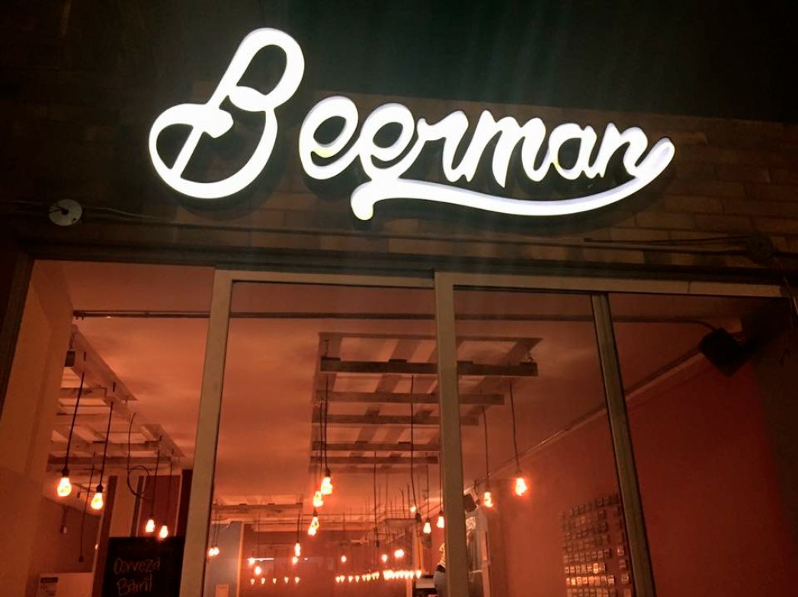
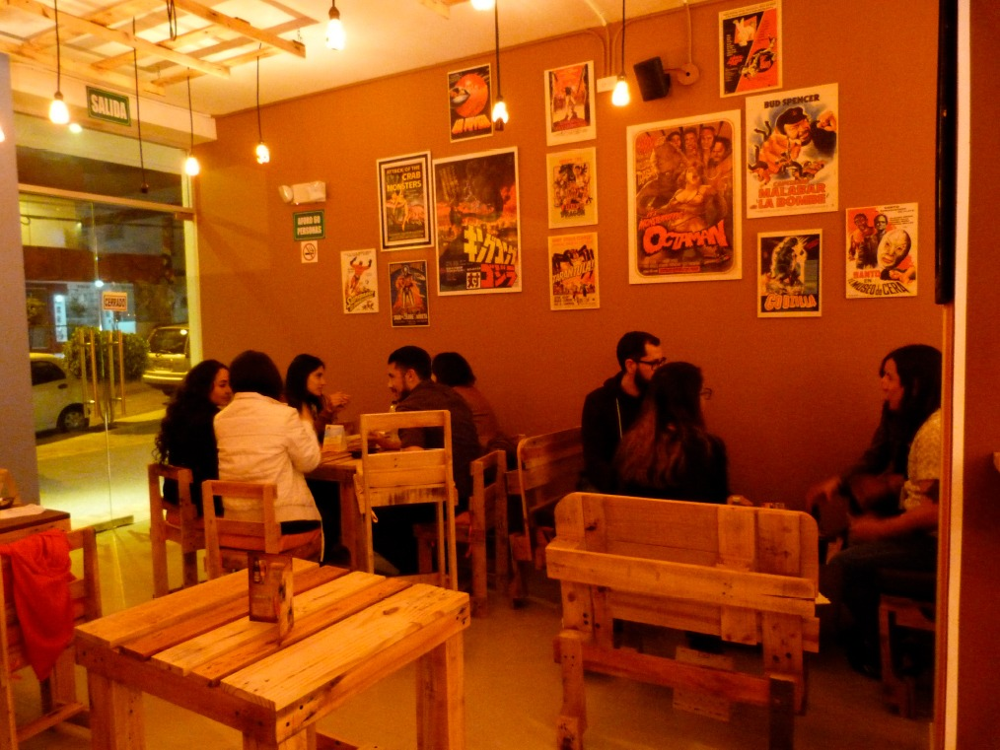
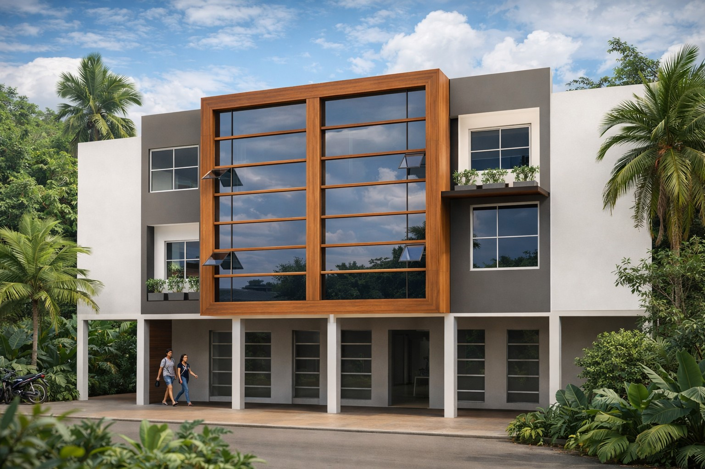
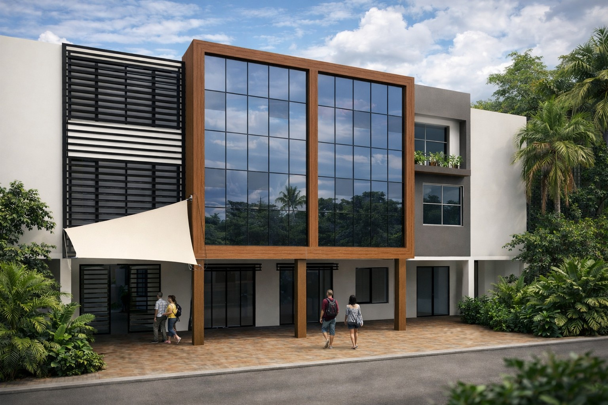
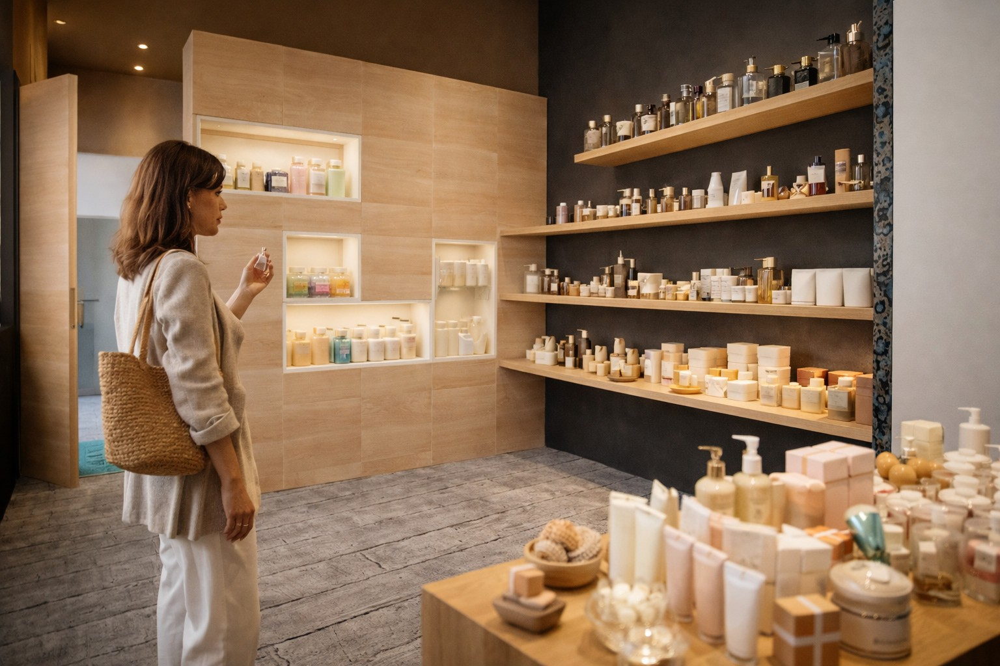
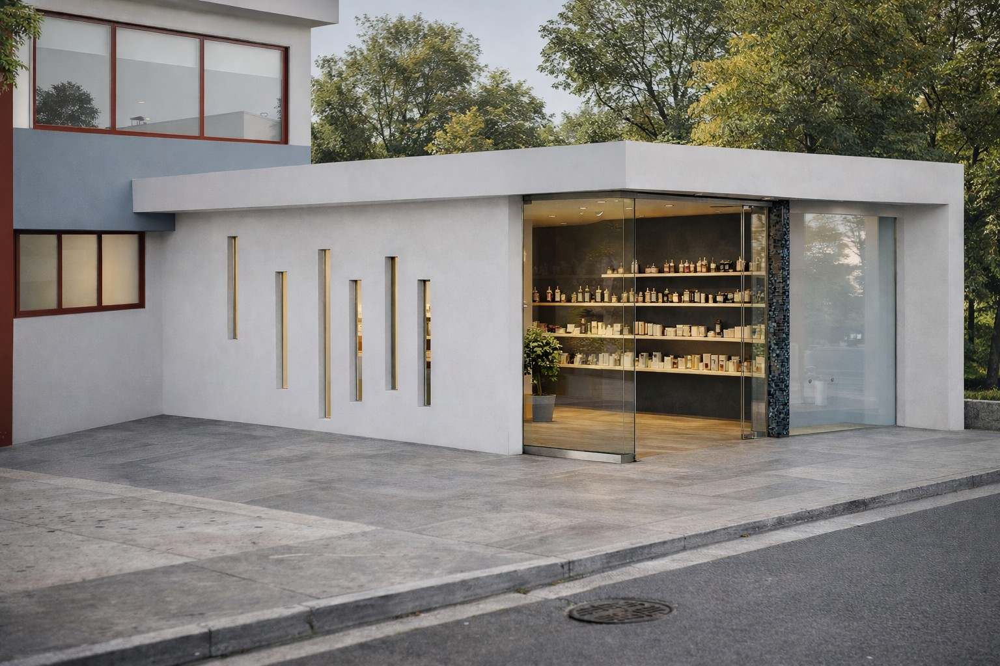

Desarrollos comerciales ejecutados por ARQA Grupo Inmobiliario.


Ubicación: Quito, Ecuador
Estado: Diseño y acondicionamiento
Área: 90 m² aprox.
Año: 2016
Bar de cervecería artesanal desarrollado con enfoque urbano y experiencia de marca.


Ubicación: Lago Agrio, Ecuador
Estado: Diseño
Intervención: Rediseño de fachada
Año: 2014
Propuesta de renovación arquitectónica enfocada en modernización de imagen y presencia urbana.


Ubicación: Quito, Ecuador
Estado: Diseño-Interiorismo
Año: 2019
Es una Boutique para venta de artículos de limpieza y belleza. Se desarrolla en un área de 15m2 en un espacio construido en los años 80s y donde originalmente era un parqueadero cubierto con losa de hormigón. El proyecto mantiene conexión con la casa grande por la parte posterior.